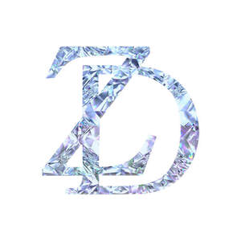

Trade Mark Journal No.2025/022 30 May 2025
UK00004204579 16 May 2025 (3,14,18,25)

- Class 3
- Adhesives for false eyelashes, hair and nails; Cold cream, other than for medical use; Cologne water; Cosmetics; Eau de parfum; Hair balms; Hair colour removers; Hair cream; Incense sticks; Lipstick; Make-up pads of cotton wool; Nail conditioners; Oils for the skin; Organic makeup; Shave balm; Shave creams; Skin toner; Tanning creams; Tissues impregnated with make-up removing preparations; Massage gels other than for medical purposes.
- Class 14
- Amulets being jewellery; Articles of jewellery with precious stones; Artificial gem stones; Bracelets and watches combined; Bracelets for watches; Chronoscopes; Clocks and watches; Drop earrings; Ear clips; Ear ornaments in the nature of jewellery; Imitation gold; Jewellery; Jewellery articles; Jewellery caskets; Key holders [trinkets or fobs]; Silver; Tiaras; Watches for nurses; Women's jewelry; Women's watches.
- Class 18
- Back packs; Baggage tags; Bags; Bags made of leather; Belt bags; Bridles [harness]; Cosmetic bags; Credit card cases; Equine boots; Evening bags; Evening handbags; Evening purses; Fitted belts for luggage; Fitted protective covers for luggage; Handbags for ladies; Imitation fur; Imitation hide; Luggage, bags, wallets and other carriers; Pet clothing; Wheeled luggage.
- Class 25
- Ankle boots; Articles of clothing made of leather; Bathing costumes; Evening dresses; Gowns; Heelpieces for footwear; Ladies' boots; Ladies' dresses; Ladies' underwear; Ladies wear; Menswear; Parts of clothing, footwear and headgear; Printed t-shirts; Skirts; Snoods [scarves]; Wind jackets; Winter boots; Women's ceremonial dresses; Women's clothing; Woolen clothing; Boots; Footwear; Clothing.
Xin Sun
Representative: Akos Suele, LL.M.